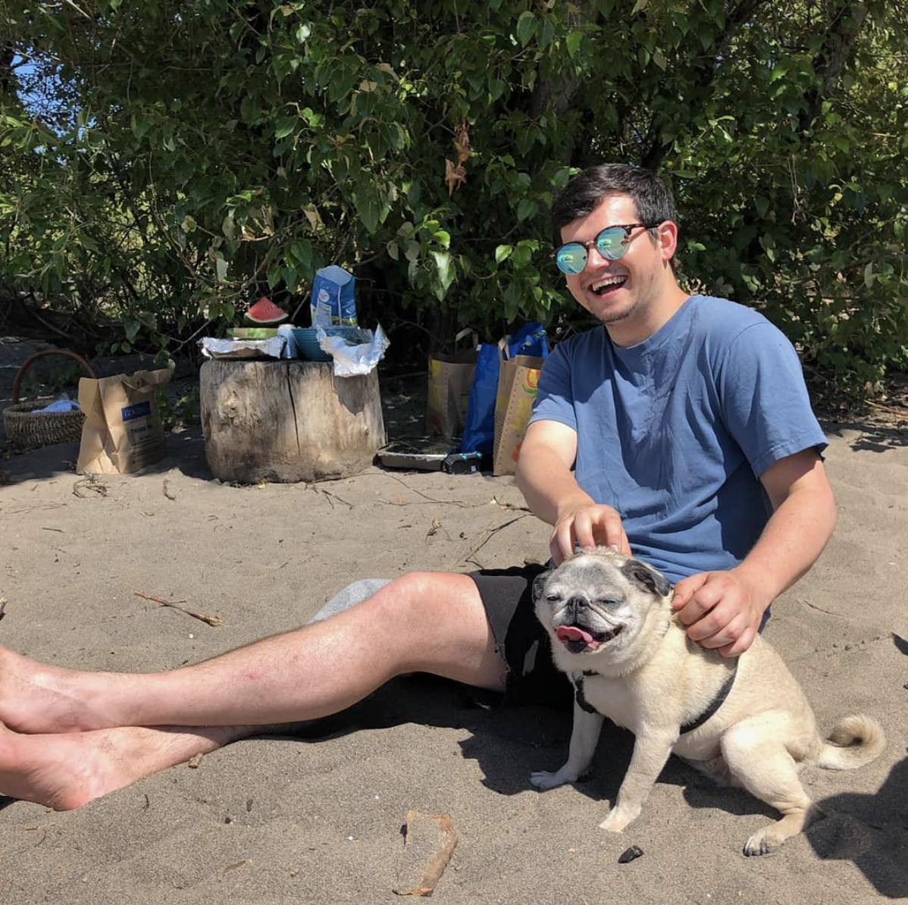

About Me
Hi, I'm Nash McDonald. I was born and raised in Bend, Oregon where I learned to love skiing, rock climbing, and skateboarding. When I'm not doing these, you can find me hanging out with friends, playing videogames, learning woodworking, and generally screwing around on the internet.
I Moved to Portland, Oregon to pursue a B.S. in Electrical Engineering which I managed to obtain in August of 2018. I recently started a fullstack web development bootcamp through the University of Oregon to hone my programming skills and to hopefully learn about back-end web systems. I'd like to use this knowledge to pursue a career in IOT devices.
I'm just starting my web dev career, but it's already a lot of fun! I like the idea of being able to do freelance web development in the future as well. This would give me a shot at being my own boss, which is something i've always dreamed of.